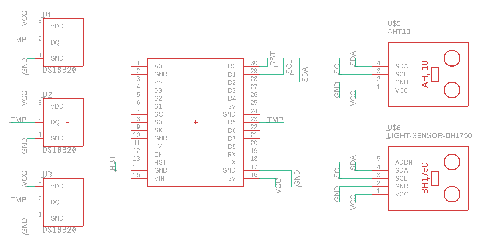

Potduino¶
Smart flowerpot that connects to Google home API using a NodeMCU ESP8266 as the brains. The project aims to use multiple sensors to monitor the environment to watter the plants located in 3 pots and log that sensor data locally and on a server. Or can just watter the plants on an schedule depending on the configuration. The code used on this project can be found at the src directory. So as the schematics for the circuit at the hwd directory. Lastly, a dockerfile with the environment used to develop this project can be found at docker.
The sensors used include:
AHT10: environment temperature.
BH1750: environment luminosity level.
DS18B20 waterproof: Soil temperature.
Getting Started¶
Prerequisities¶
Docker¶
A dockerfile containing the development environment can be found at docker/Dockerfile. In order to build/run this image you’ll need to install docker. See installation instructions atGetting started with docker in Linux. You cand find specific instructions on how to build/run this docker image at the docker/README.md file.
Note: At this time Windows doesn’t support mounting UART (COM) ports into a docker container. So if you want to use the image you should run it on a GNU Linux system.
Circuit¶
First you need to build the circuit, or you can modify it to fit your requirements. 
Deployment¶
In order to use the code provided, you’ll need to flash latest micropython firmware on your ESP8266. This can be done in a terminal inside of the dev container image (see docker/README.md) like this:
$ curl -O https://micropython.org/resources/firmware/esp8266-1m-20210418-v1.15.bin
$ mcflashclean
$ mcflash esp8266-1m-20210418-v1.15.bin
More information on micropython can be found at micropython’s page.
Then, install the required libraries on the board:
$ mcput vendor/micropython_ahtx0/ahtx0.py /lib/
$ mcput vendor/upylib/bh1750/__init__.py /lib/bh1750.py
$ mcput vendor/pycopy-lib/logging/logging/__init__.py /lib/logging.py
Then, upload the code after doing any modification your hardware requires:
$ mcput src/firmware/potduino.py
$ mcput src/firmware/pot.py
$ mcput src/firmware/main.py
The modules are documented on the read-the-docs page.
License¶
This project is licensed under the MIT License - see the LICENSE file for details.